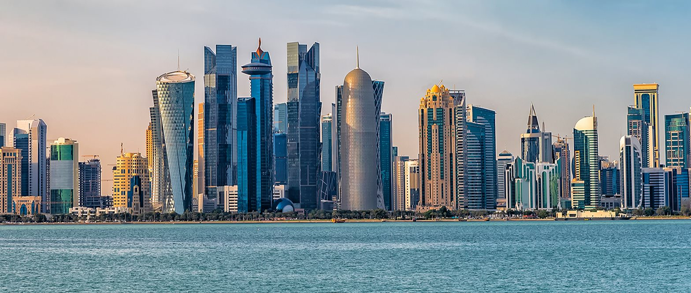

O Qatar
Neste ano de 2022 mais uma Copa do Mundo Fifa de Futebol Masculino irá ser disputada, e pela primeira vez essa disputa acontecerá no Qatar.
O Qatar é um país árabe, um emirado do Oriente Médio, islâmico, que faz fronteira terrestre com a Arábia Saudita e é envovido pelo Golfo Pérsico. É a menor das nações a sediar uma Copa do Mundo e também a primeira nação do Oriente Médio a receber este evento.
É uma nação independente desde 1971 e desde então sua economia é baseada em petróleo e gás natural, tendo a terceira maior reserva mundial de gás no mundo e é o segundo maior exportador mundial de gás natural liquefeito, sendo é um dos países mais ricos da região. É possível notar isso na prática quando se sabe que parte dos estádios em que se realizarão os jogos da Copa do Mundo foi construído do 0, apenas para o evento.
O Torneio
A Copa do Mundo de Futebol é organizada pela Federação Internacional de Futebol (FIFA), foi realizada pela primeira vez em 1930 e ocorre num intervalo de 4 anos entre cada edição.
Em 1930 o torneio ocorreu no Uruguai, sendo não só o país sede como também o campeão da edição, que contou com 13 equipes convidadas a participar - algumas mesmo convidadas não estiveram presentes, como Inglaterra e Alemanha, que não se dispuseram a viajar para a competição. O Brasil é o único país que participou de todas as copas até agora (e também estará na competição de 2022). Atualmente, com a expansão da competição, existem etapas classificatórias para definir quais serão os países participantes.
A edição de 2022 é a 22ª edição do torneio e a primeira a ser realizada no Oriente Médio, bem como a primeira a ser realizada no período final do ano em vez do período tradicional, comumente no mês de julho, pois neste as temperaturas do país sede são altas demais, inviabilizando a competição. Esta será a última edição disputada por 32 equipes, isto é, antes da expansão para 48 equipes.
Para esta edição, o mascote oficial é o La'eeb, um acessório masculino tradicional para os homens na cultura árabe, e a bola oficial da copa é conhecida como Al-Rihla.